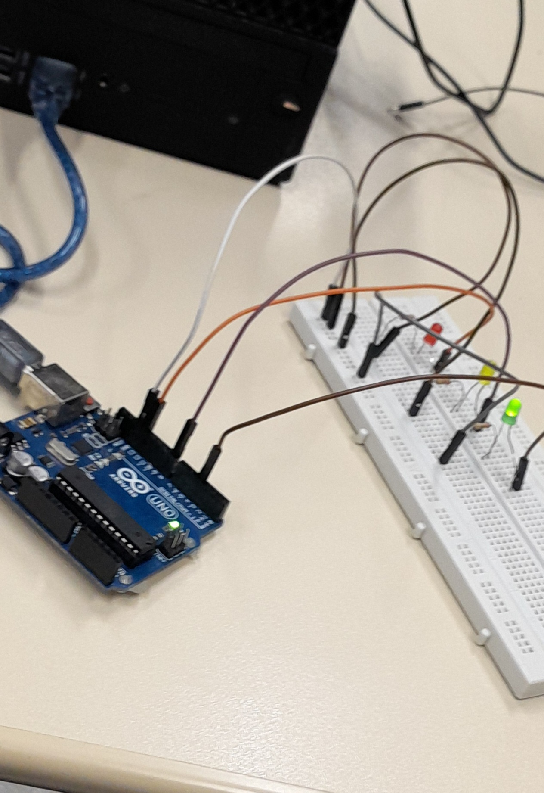
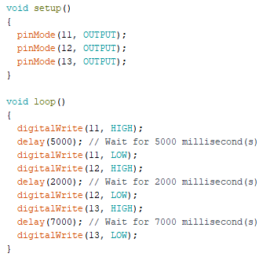

Imagem do Projeto na Prática

Video do Semáfaro Simples
Imagem do código na IDE do Arduino

Código C++
void setup()
{
pinMode(11, OUTPUT);
pinMode(12, OUTPUT);
pinMode(13, OUTPUT);
}
void loop()
{
digitalWrite(11, HIGH);
delay(5000); // Wait for 5000 millisecond(s)
digitalWrite(11, LOW);
digitalWrite(12, HIGH);
delay(2000); // Wait for 2000 millisecond(s)
digitalWrite(12, LOW);
digitalWrite(13, HIGH);
delay(7000); // Wait for 7000 millisecond(s)
digitalWrite(13, LOW);
}